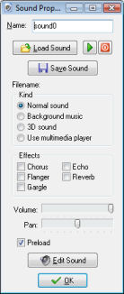

Besides the buttons to load, save, and play sounds there are a lot of settings now that will be discussed here.
First of all you can indicate the kind of sound. Four kinds are possible. Normal sounds are in general used for sound effects in wave files (although they can be used for midi files as well). Multiple normal sounds can play at the same time. You can even play multiple copies of the same sound simultaneously. Background music is similar to normal sounds but only one can play at any moment. So once you start a new background sound, the currently playing one will be stopped. Midi files are default background music. 3D sound is sound for which you can apply 3D settings through special functions. You will only need these for advanced sound effects.
Sound files are normally played through DirectX. This gives many possibilities but is limited to wave and midi files. If you want to play other files, like mp3 files, you should select the option to use the media player. This is much more limited though. No volume changes or effects can be used and only one piece can play at once. Note that midi files, when played through the media player may sound different from playing them as background or normal sounds. The reason is that the media player uses the hardware synthesizer (which is different on each machine) while otherwise a software version is used (which sounds the same on all machines). Preferably don't use mp3 files in you games. They need to be decompressed which takes processing time and might slow down the game. The fact that the file size is smaller does not mean that they use less memory. Also, not all machines support them. So your game might not run on all machines.
Secondly, you can indicate some sound effects, like chorus or echo (only in the Standard Edition of Game Maker!) You can select any combination. You can immediately listen to the results. (When using GML code you can even change the parameters of these effects.)
Also you can indicate the default volume of the sound and whether to pan it to the left or the right speaker.
For all sounds you can indicate whether they should be preloaded or not. When a sound is played it must be loaded into audio memory. If you preload the sound this is done at the start of the game, making it immediately available for playback. When not, it is loaded the first time it is used. This will save memory but might give a small delay the first time the sound is used.
Game Maker does not have a built-in sound editor. But in the preferences you can indicate external editors that you want to use for editing sounds. If you selected these you can press the button labeled Edit Sound to edit the current sound. (The Game Maker window will be hidden while you edit the sound and returns when you close the sound editor.)
| Converted from CHM to HTML with chm2web Pro 2.85 (unicode) |